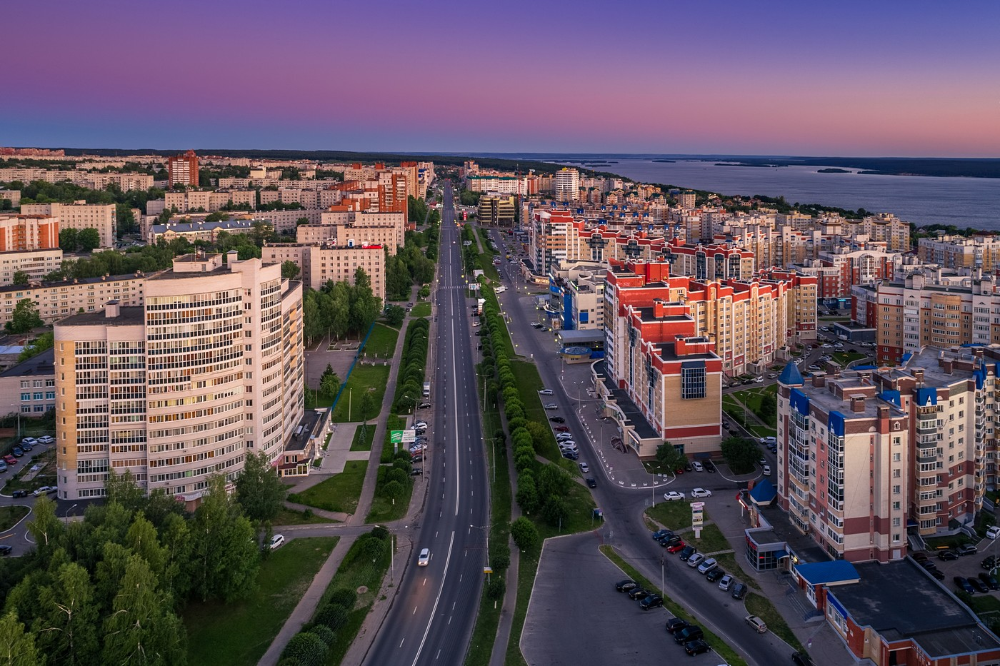

Московский район - один из районов города Чебоксары. Расположен в западной части Чебоксар и состоит из трёх основных микрорайонов: Исторический холм, Северо-Западного, Юго-Западного.
Главные улицы района: Московский проспект, проспект Максима Горького, Улица Мичмана Павлова, ул. Гузовского, ул. Университетская, ул. Гражданская , Ядринское шоссе
Московский район отличается близостью к лесопарковой зоне и развитой инфраструктурой, что делает этот район наиболее комфортным для проживания.
